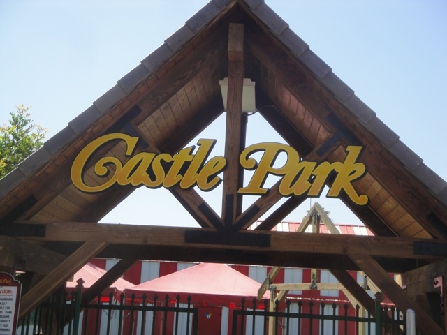
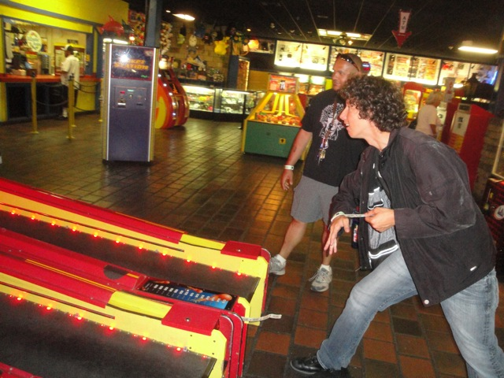
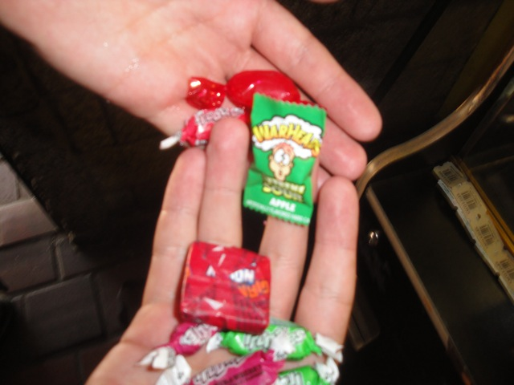
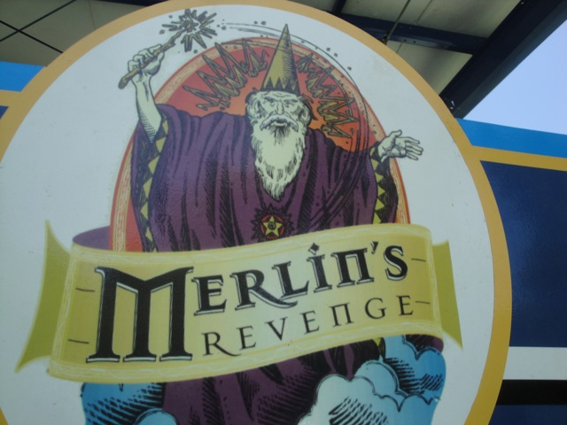
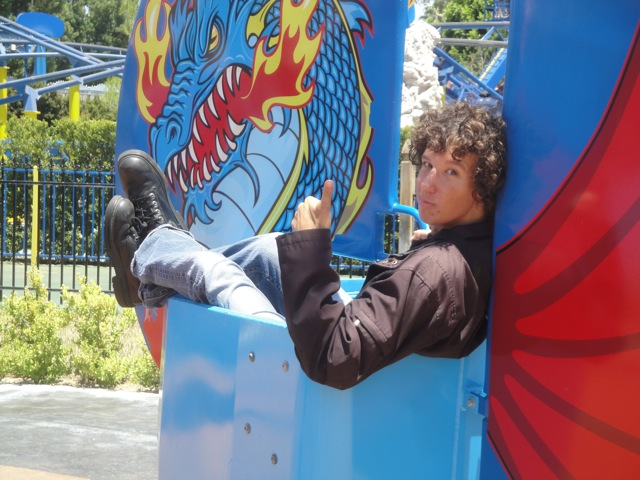
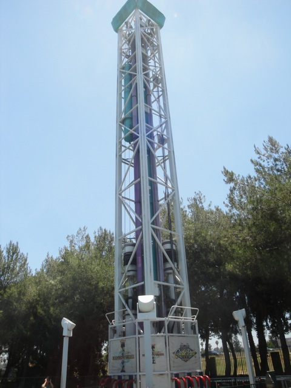

Credit Whoring Day
Castle Park Scandia

Well, today was Credit Whoring Day for us, as we took the long drive from Ventura to Riverside to hit up both Castle Park and Scandia in an effort to gain 5 new credits. Not only did we get all 5 credits, but we found a lot of fun hidden gems here down in Southern California. Anyways, after a long 2 hour drive, we have arrived at Castle Park. (BTW, this day literally took an entire tank of gas. I filled up the night before and at the end of the day, I had to fill it again, and I don't drive a sh*tty low milage car either.)
THAT SIGN BETTER NOT SAY WHAT I THINK IT SAYS!!!!!! WE BETTER NOT BE PULLING A SANTA MONICA PIER HERE!!!!!!!
Phew. We read it wrong. It was a list of rides that were closed today. (The sign lied BTW) But that's such a relief that we won't have driven 120 miles for nothing.
Ooh. Pretty Carousel.
You know, for a credit whoring park, this place is really f*cking nice!!!! It almost looks like Mini Hersheypark in a way.
They're also opening a small little water park this summer. Yeah. This park is really freaking nice.
They even have a shooting dark ride as an upcharge in the arcade, but considering that it's just the same ride as the shooting dark ride at Nickelodeon Universe, we didn't ride.
Instead we spent some time in Castle Park's really nice arcade. Oh, and here's the Terminator...Crap, I mean Apocalypse Game!!!!
"All right Knotts Berry Farm!!!! Listen Up!!! You're gonna stop procrasting, get up off your lazy asses and finish Windseeker right now!!!! Any questions?"

You can't step into an Arcade without playing a little Skeeball.
I can actually still get a good score at Skeeball, while Cody on the other hand, can't. =p
"YAY!!!! I HAVE ENOUGH TICKETS TO WIN A PLASTIC FROG!!!!"
"Hey!!! I may suck at Skeeball, but at least I can actually get something from the Claw Game!!!"

The warhead alone was worth the $0.25 I spent on the game.
Time to relive some Childhood memories by playing the Spider Stomping Game.
I sucked at this game when I was 10. 9 years later, I still can't play for sh*t.
Ooh. Nice Haunted Mansion style Shandaller.
Are these frogs playing leap frog or humping? Email me, and if you're right, you'll win absolutely nothing!!!
Start the train now.

All right!!! It's 12:00 now, which means it's time for the credit whoring to begin!!!!
First ride of the day is indeed the Vekoma Rollerskater. This makes Cody very happy.
Hey Merlin!!! You are aware that this revenge of yours isn't unique in any way. I've experience your revenge 3 other times, two of which were right here in Southern California.
I love Vekoma Rollerskaters.
 Wile E Coyote > Merlin.
Wile E Coyote > Merlin.
Sweet!!! They've got a Falling Star here!!! These rides are awesome.
"OH MY GOD!!!! KEVIN JUST ALMOST DIED!!!!"
 *Sigh* A Pole Position Clone. Why did it have to be a Pole Position Clone?
*Sigh* A Pole Position Clone. Why did it have to be a Pole Position Clone?
 Many people say that this ride used to be Pole Position, but then came to Castle Park in 2008. But that's Bullsh*t since we've ridden Pole Position at the Ventura County Fair in 2008 and 2009. Oh, and we also rode it at the Santa Barbara Fair in 2010. So that proves that theory wrong.
Many people say that this ride used to be Pole Position, but then came to Castle Park in 2008. But that's Bullsh*t since we've ridden Pole Position at the Ventura County Fair in 2008 and 2009. Oh, and we also rode it at the Santa Barbara Fair in 2010. So that proves that theory wrong.
 DUDE!!!! This ride was HAULING ASS!!!!!!! IT SPUN LIKE CRAZY!!!!!
DUDE!!!! This ride was HAULING ASS!!!!!!! IT SPUN LIKE CRAZY!!!!!

Oh yeah. This place has flyers. Let's check those out.
While they were fun, they were also unsnappable, which really sucked. =(
Stupid Unsnappable Flyers.

The Double Shot here is really unreliable. We first got to it, and it hadn't opened up yet. So when we came back, it was open, so we pulled down the OTSRs and got on, we rose up and got in launch position, but then we just went back down and got off. We were told that the ride broke down and would reopen later. Then when we came back, we saw it running with people. So we got back in line. But then it did the exact same thing right before we got on. So yeah, this Double Shot hates Incrediblecoasters. Yeah, well F*CK YOU DOUBLE SHOT!!!!!
These bumper cars are automatically better than the ones at Six Flags Magic Mountain since here, they actually understand that the concept of bumper cars is *GASP* BUMPING PEOPLE!!!! THER HORRORS!!!!!!
 Yeah. Just in case you forgot that this was Credit Whoring Day.
Yeah. Just in case you forgot that this was Credit Whoring Day.
This puny little kiddy coaster was actually a lot of fun. =)
 Now that we got all the credits at Castle Park, we can do the rest of the park, such as this intersting log flume.
Now that we got all the credits at Castle Park, we can do the rest of the park, such as this intersting log flume.
SPLOOSH!!!!!!!!
 HOLY CRAP!!!! The food prices here are actually decent!!!! At Knotts, you'd get the same meal for triple the price!!!! (Not exxagerating.)
HOLY CRAP!!!! The food prices here are actually decent!!!! At Knotts, you'd get the same meal for triple the price!!!! (Not exxagerating.)
DUDE!!!! When was the last time you saw the old Disneyland Logo!!!? (Looking it up in Google Images and claiming a few seconds ago doesn't count you cheater!!!)
From what Ceaser told me, this big train rarely ever runs, so it was pretty cool that we got to ride it today.
Dude, our ride on the Tilt a Whirl was awesome!!! We managed to make it spin like crazy!!!!
Fun Fact. This used to be the Tiujuana Taxis at Knotts Berry Farm.
I broke the ride!!!! Right after I got on, the ride broke down, leaving everyone else unable to ride!!! Take that everyone else!!!
And sadly, Fireball never opened up. But oh well. We had a lot of fun at Castle Park, but it's only 2:00 and we still have more credits to get in Credit Whoring Day!!!! Off to the Car!!!!
Scandia
Home